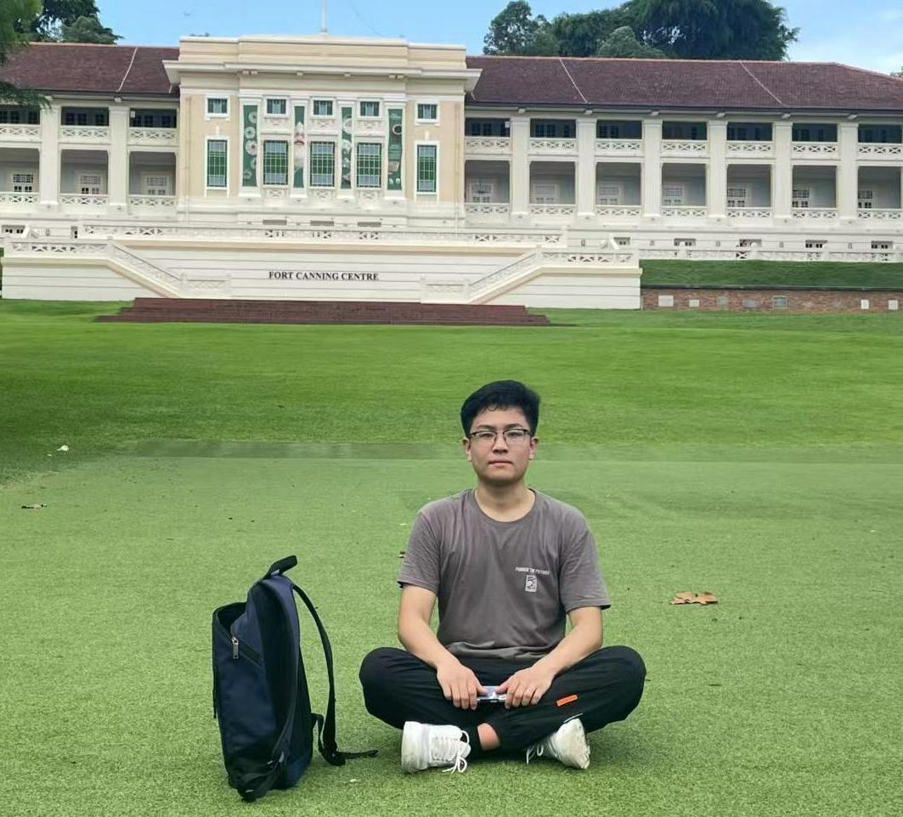

Yanzhao Shi 时彦钊
|
College of Computer Science, Beijing University of Technology |
 |
 Google Scholar
Google Scholar Github
GithubBiography
Welcome! I am currently in my final year as a Master's student studying Computer Science and Technology at Beijing University of Technology, supervised by Professor Junzhong Ji, co-supervised by Associate Professor Xiaodan Zhang. I am also remotely advised by Assistant Professor Liangqiong Qu at the University of Hong Kong. I deeply appreciate the dedicated guidance and support.My current research topics are medical AI and deep learning. I mainly focus on medical report generation and medical vision-language pretraining, involving biomedical informatics, computer vision, and natural language processing. Besides, I'm also interested in contrastive learning, knowledge graph, and large vision language models. The long-term objective of my research is to explore the most advanced methods for enhancing the explainability, fairness, safety, and human-centric nature of trustworthy medical AI models.
I will join HKU-Qu-Lab for my Ph.D. studies starting from 2025 Fall, focusing on medical multi-modal large language models.
News
- [2024.09] One paper was accepted by EMNLP 2024 Findings.
- [2024.08] We proposed a LLM-based gaming AI (Llama_Dou) that achieves first runner-up at the Chinese Collegiate Computer Gaming AI Contest.
- [2024.02] One paper was accepted by Multimedia Systems (JCR Q1).
- [2024.01] One paper was accepted by Multimedia Systems (JCR Q1).
- [2023.11] One paper was accepted by Computers in Biology and Medicine (JCR Q1).
- [2023.10] One paper was accepted to EMNLP 2023 (Oral Presentation) Paper.
- [2023.06] One paper was nominated as the best paper of ChinaMM 2023.
- [2023.05] Two papers were accepted to ChinaMM 2023 Paper.
Awards and Honors
- 2024, Master's Degree First-Class Academic Scholarship (Rank 1st in major)
- 2024, Chinese Collegiate Computer Gaming AI Contest - First Runner-Up
- 2023, Outstanding Master's Student, Beijing University of Technology
- 2022-2023, Master's Degree First-Class Academic Scholarship (Rank 1st in major)
- 2023, Best Paper Award Nomination at ChinaMM 2023
- 2023, Chinese Collegiate Computer Gaming AI Contest - First Prize
- 2022, Outstanding Graduate, Shandong Province
- 2022, Outstanding Graduate, University of Jinan
- 2018-2022, Undergraduate First-Class Academic Scholarship (every year)
- 2018-2022, Outstanding Undergraduate Student, University of Jinan (every year)
Publications [Google Scholar]
☆ Medical Report Generation
|
See Detail Say Clear: Towards Brain CT Report Generation via Pathological Clue-driven Representation Learning. |
|
Granularity Matters: Pathological Graph-driven Cross-modal Alignment for Brain CT Report Generation. |
|
Weakly Guided Attention Model with Hierarchical Interaction for Brain CT Report Generation. |
|
Prior Tissue Knowledge-Driven Contrastive Learning for Brain CT Report Generation. |
|
GHCL: Gaussian Heuristic Curriculum Learning for Brain CT Report Generation. |
Services
Reviewer:
-
ACM MM 2024;
ACL ARR February 2024.